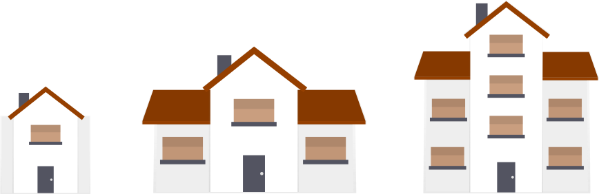
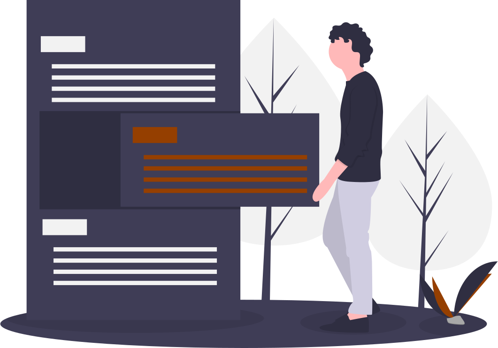

Front-end
Maciej Preus - (głównie) strony internetowe
O mnie
Czym się zajmuję
Tworzę strony internetowe różnego zastosowania. Główny nacisk kładę na dwa elementy: projekt graficzny i responsywność. Oznacza to, że strony powinny przyciągać wzrok i dobrze wyświetlać się na urządzeniach każdej wielkości. Wciąż uczę się nowych technologii, śledzę trendy zarówno z zakresie UX jak i RWD.
Początki
Programowaniem zainteresowałem się wskutek negatywnych doświadczeń z wieloma stronami internetowymi. Były nieintuicyjne - trudno było znaleźć pożądane informacje, były niedopracowane graficznie (niejednolita jakościowo i kolorystycznie grafika), wczytywały się długo - za długo, a w końcu często były zdezaktualizowane, z linkami prowadzącymi nie tam, gdzie sugerowały podpisy. Jesienią 2018 r. skorzystałem więc z kilku kursów on-line, ucząc się bardzo aktywnie początkowo HTML i CSS oraz ogólnych zasad programowania. Wówczas złapałem bakcyla. Wciągnęło mnie to mocno. Szybko w ramach HTML i CSS zrobiło się ciasno i uznałem, że konieczne jest poznanie innych technologii i narzędzi.
Obecnie
Tak trafiłem na intensywny kurs front-end "JavaScript (React)" w Coders Lab w Warszawie, gdzie rozszerzyłem umiejętności w zakresie HTML i CSS oraz dostałem dobre podstawy preprocesora SASS, języka JavaScript (+ES6), a także jQuery. Niejako przy okazji poznałem środowisko Node.js i zasady budowy responsywnych stron internetowych. Dodatkowo sam nauczyłem się podstaw Bootstrap4. Ciągle ugruntowuję i rozszerzam swoje umiejętności nie tylko na kursie, ale i poza nim. Świadczą o tym projekty, z których kilka prezentuję poniżej i reporytorium na GitHub.
Używane technologie
HTML
dobrze sobie radzę
CSS
dobrze sobie radzę
SASS
dość dobrze sobie radzę
Bootstrap
radzę sobie i wciąż pracuję
RWD
dobrze sobie radzę
JavaScript
radzę sobie i wciąż pracuję
jQuery
radzę sobie i wciąż pracuję

Osiągnięcia
...czyli kilka wybranych projektów pokazujących (dosłownie) co zrobiłem praktycznie
Strona fikcyjnej firmy budowlanej wykonana została wiosną 2019 r. jako element warsztatów utrwalających podstawową wiedzę i umiejętności z zakresu biblioteki CSS Bootstrap4. Witryna, zmodyfikowana nieco względem pierwotnego projektu, jest w pełni responsywna.
 BudownictwoStrona SitOnChair powstałą wiosną 2019 r. jako element warsztatów w Coders Lab. To wprawdzie landing page, ale z podstawowymi funkcjonalnościami w JavaScript: slajderem i kalkulatorem symulującym zamawianie krzesła. Dzięki temu można poznać zarówno koszty poszczególnych elementów (z rozwijanego menu), jak i ewentualnego transportu oraz cenę końcową.
 SitOnChair
SitOnChair
Strona fikcyjnej restauracji Pacific, przygotowana wczesną wiosną 2019 r. jako element warsztatów w zakresie budowy responsywnych stron internetowych.
Podstawowym narzędziem były tu zapytania @media queries.
Pacific RestaurantCo mnie kręci
...czyli co przeczytałem / widziałem i zrobiło na mnie wrażenie
Smashing Magazine to miejsce z interesującymi artykułami, rekomendowanymi książkami i opisami ciekawych wydarzeń. SM publikuje też oferty pracy, w tym i dla front-end developerów.
 Smashing Magazine
Smashing Magazine
OneZero jest świetnym miejscem dla miłośników najnowocześniejszych technologii. Tych zafiksowanych np. na elektronice konsumenckiej, jak i tych szukających zależności i konsekwencji intensywnego zanużania się w świat technologii.
 OneZeroCSS Tricks to strona z mnóstwem artykułów o pracy w CSS, HTML i Java Script, więc najważnieszych komponentach większości stron internetowych. Masa ciekawych rozwiązań dostępnych na jednej stronie.
 CSS Tricks
CSS Tricks
Zdrowy tryb życia - umiarkowanie w smakowaniu życia daje wiele przyjemności. Utrzymywanie się w satysfakcjonującej formie fizycznej (regularne ćwiczenia, pozostawianie samochodu w jednym miejscu i załatwianie spraw pieszo) pozwala lepiej wykonywać zadania intelektualne. Tak robię!


e-mail: mpreus@onet.eu
pracowity, solidny, dbały o szczegóły, lubiący pracę zespołową
otwarty na wyzwania technologiczne i inne (relokacja)
podejmie pracę / współpracę w zakresie rozwiązań front-endowych